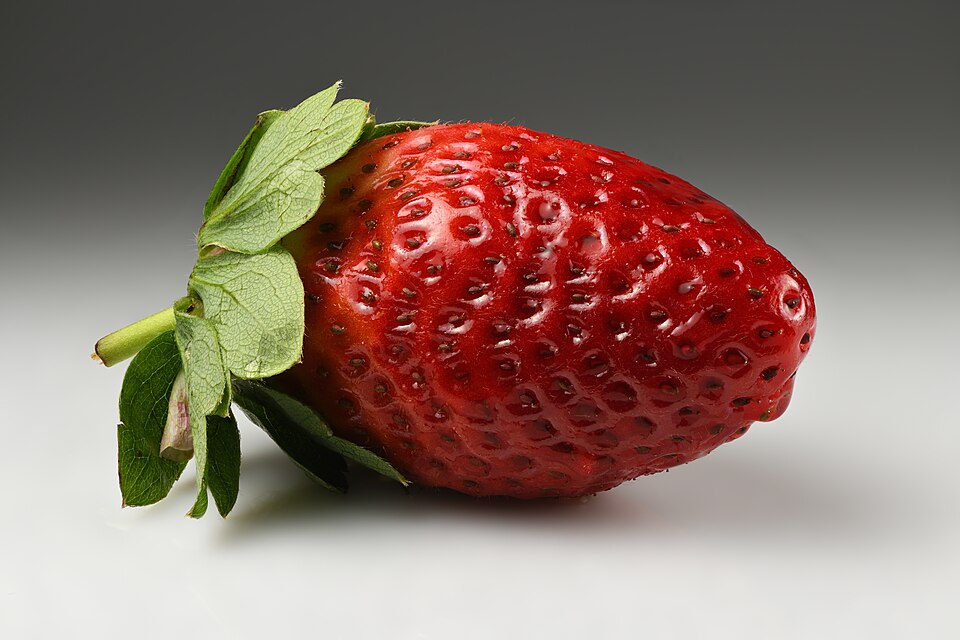

Strawberries grow best in fertile and well-drained soil.
Before planting, the soil should be cleaned of weeds and carefully prepared.
Compost or organic fertilizer can be added to improve the quality of the soil.
Strawberry plants should be planted in a sunny location.
Enough space should be left between the plants so they can grow properly.
After planting, the strawberries should be watered carefully.
Strawberries need regular watering, especially during dry weather.
Weeds should be removed because they can take nutrients and water from the plants.
Suitable fertilizer can be used during the growing season.
Strawberries are ready to harvest when they become completely red.
The fruit should be picked carefully to avoid damaging it.
Fresh strawberries can be eaten directly or used to make desserts.
Growing strawberries is an interesting and useful activity.
With proper soil, watering, and care, it is possible to get a good harvest.
Strawberries can be grown in gardens, pots, or greenhouses.